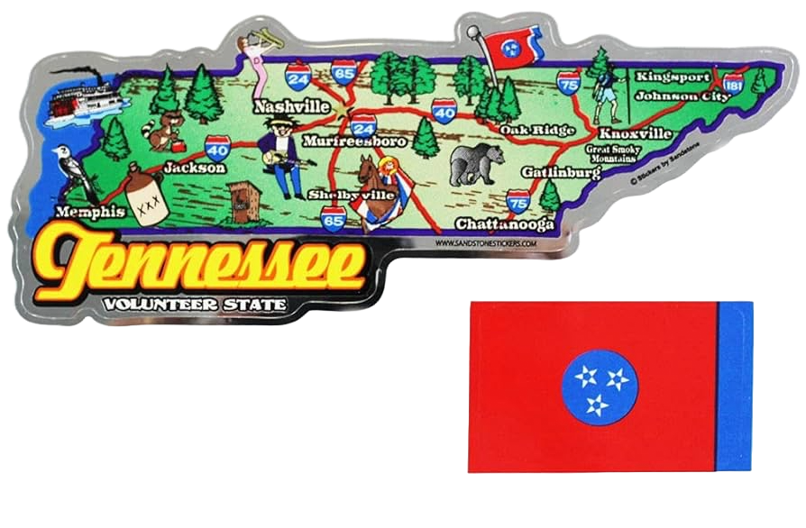

| Atticus Belcher ‘28 is from Mount Juliet, Tennessee and graduated from Green Hill High School. At Green Hill, Atticus was Student Body President, President and founder of the Young Democrats, and a member of the Varsity Tennis Team. Atticus was also elected Secretary General of the Tennessee High School Model United Nations Conference. At Dartmouth, Atticus plans to pursue a major in Government modified with Philosophy, and minor in Public Policy. He is currently involved in a number of student organizations, including the Dartmouth Democrats, Democratic Youth Consulting, Dartmouth Model United Nations, The American Constitution Society, and he serves as an Associate Editor for the Dartmouth Law Journal. After Dartmouth, Atticus plans to attend law school and pursue a career in law and Tennessee politics.

|